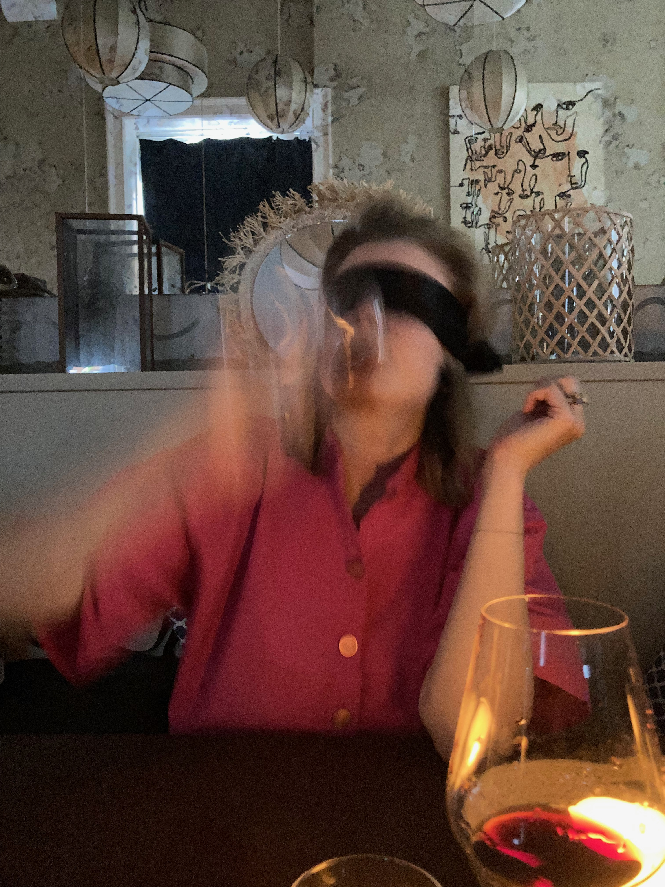
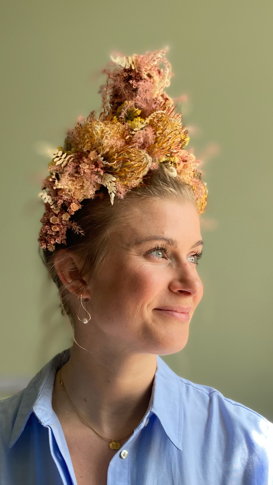
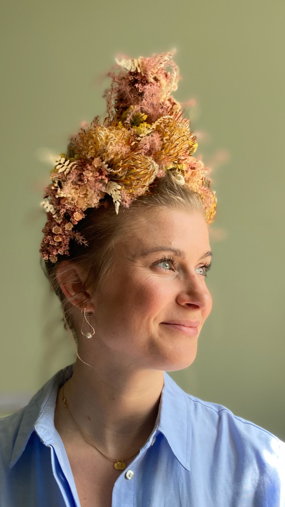

MY BETTER HALF
An honest review
of Zina Laura Bosse
(a.k.a min skat)
This year, Zina's turning 33.
Just like Jesus.
And I don't know how many miracles
this so-called-Jesus has done,
but let me tell you this:
Zina's done quite a few.
Jesus multiplied fish and bread to feed the community. OK, that sounds cool.
You know what's even cooler? To multiply jobs and boost the economy in this challenging times.
Jesus walked on water. Okay, that is super cool.
But did he ever make notes appear out of thin air?
I don't think so.


Jesus turned water into wine? So what. Zina did the same. And drank it.
And don't even get me started with fashion.
What's the most risky outfit Jesus wore? Sandals?
 

But don't take my word for it. Check what her followers have to say.

LIS KAYSER
I love Zina so much! She is not only the best roommate one could wish for, she is also a one-of-a-kind friend! She is an excellent cook (I can highly recommend her cinnamon buns, alfajors, rhubarb-jam, and all kinds of pastas). Zina is so curious of life, she makes you explore many new things yourself (incl. dry flower arrangements, beautiful gift wrapping techniques, redecorating your home). She is always in the mood for visiting a cool art exhibition and trying out the newest restaurants in town - or just order fantastic blue mussels at Fiskebar for the 100th time. She would never say no to grab a coffee and stroll around the streets of Vbro. Zina has the best humour, the most heart-warming laugh, and she can tell great stories. She is there for you when you need to talk to a good friend. She is there for you when you have to cry your eyes out. Everyone should have a Zina in their life!

SARAH FALK
10 Flowers out of 5.
If you don't have a Zina in your life,
then you are truly missing out and should make this your primary mission.
Look for the most beautiful, warmhearted, caregiving, creative and funloving
person you can find, and then attempt to make a strong friendship.
Try with gourmet food and wine, great attention to details,
personal gestures and long walks.
If you succeed, you will have the loveliest friend for life

LIV SKOVGAARD
Zina is my friend. One of my closest. She is one of a kind. She has a special kind of power and energy that inspires and challenges me, and other people as well. She has a fighter's heart, a grand personality and a creative mind. We are very much alike and very different from each other. Our friendship is almost life-long and has ups and downs, but we never lose sight of the love and respect for each other. That's the way it is with family chosen by the heart. Love you.